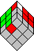

Explanation
Version
This is version 0.93 of my CubeSolver applet. I built it using Visual Café 4.1a.
Features
Using this applet you are able to:
- Play with the cube (Left mouse button).
- Setup a position of the cube (Right mouse button).
- Find the shortest algorithm(s) to solve a position of the cube.
Playing with the cube
You can move all sides and slices of the cube by clicking on a cubie with the left mouse button, keeping the mouse button down, and releasing the mouse button on a neighboring cubie.
You can rotate the cube, by holding the CTRL-key and then moving the middle cubie of a side with the left mouse button.
After scrambling the cube, the moves are counted. After the first move time starts running, and is shown after each move.
Setting up the cube
This applet is based upon sticker mode. This means that when you setup the cube, you can change the color of individual stickers. This makes it easy to setup the cube, and it is possible to check for parts of the cubies instead of only complete cubies.
Click on a color in the palette to make the color the active color.
Now right click on a sticker of the cube. The color of the sticker will be set to the active color of the palette.
Solving a position of the cube
By setting up the cubies or moving the sides and slices of the cube you can build a position that you want to be solved. If you do not care about certain stickers, you can set their color to gray.
Next you can tell CubeSolver which moves are allowed to solve the cube, using the options in the bottom of the applet. The fewer possible moves, the sooner CubeSolver will be finished. This feature might also be handy in the following situations:
- You want to find a solution of Rubik's Domino. With Rubik's Domino it is not possible to use quarter turns for the L, R, F and B sides.
- You want to find a solution for the Two Generator family. Two Generator family means scrambling and solving the cube using only moves on two sides (f.i. only R and U turns).
Next tell CubeSolver whether it must stop after finding one solution, or it can continue checking all possible moves.
Finally you can tell CubeSolver how deep it must look for solutions. The deeper it looks, the longer it takes. Remember that Rubik's Cube has an enormous number of possible positions: 4.3 * 10^19 positions. If you were able to check 10 million positions per second , it would still take 4.3 * 10^12 seconds (136 thousand years!) to reach all possible positions.
The current version of CubeSolver is able to check all moves at a depth of 9 within 4 hours. So forget about it if you want to find a solution at depth 12 or so.
Time the applet needs to look for a solution
If all moves are allowed, CubeSolver takes the following time to check all positions at a certain depth:
| # of moves |
Solving time |
# of positions |
| 1 |
less than a second |
18 |
| 2 |
less than a second |
270 |
| 3 |
less than a second |
4,050 |
| 4 |
less than a second |
60,750 |
| 5 |
less than a second |
911,250 |
| 6 |
a few seconds |
13,668,750 |
| 7 |
two minutes |
205,031,250 |
| 8 |
15 minutes |
3,075,468,750 |
| 9 |
4 hours |
46,132,031,250 |
| 10 |
40 hours |
691,980,468,750 |
These times have been measured using a Pentium II 350 MHz with 128MB internal memory. On such a machine CubeSolver can check about 1.3 million positions per second. CubeSolver has some intelligence in it, so that it does not need to check all moves. This is possible because there are a lot of mirrored moves.
Therefore at level 9 CubeSolver needs to check 19.8 billion positions instead of the cumulative 50 billion positions mentioned in the table.
Example of solving
Suppose you want to find the shortest algorithm for the situation below. It is one of the situations for building two layers. In this case you do not care about what happens to the last layer. Therefore a lot of stickers can be set to gray, which means 'ignore stickers'.

If you already know an algorithm of seven moves for this situation, setup CubeSolver like this:

Within two minutes CubeSolver will find all solutions with a maximum of seven moves. In this case it will even find three solutions of six moves.
Good luck!
Last update: March 17, 2001.